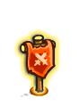

迷雾废墟
深叶哨所
三殇之殿
树海 Sea Of Trees
护卫之门 The Guardian Gate
森林之心 The Heart Of The Forest
Emerald Treetops
Ravaged Outskirts
The Wildbeast Den
Bleak Valley
Carmine Mines
Wicked Crossing
Temple Courtyard
The Lost Temple
The Lost Temple
The Lost Temple
The Lost Temple